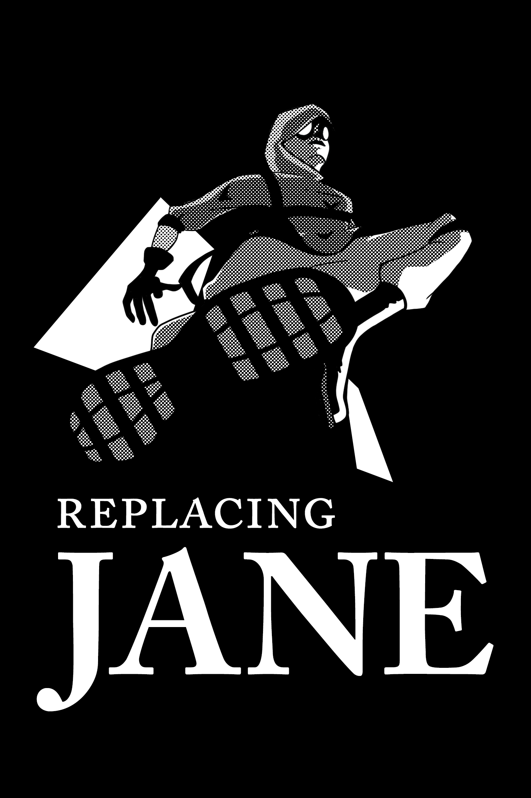
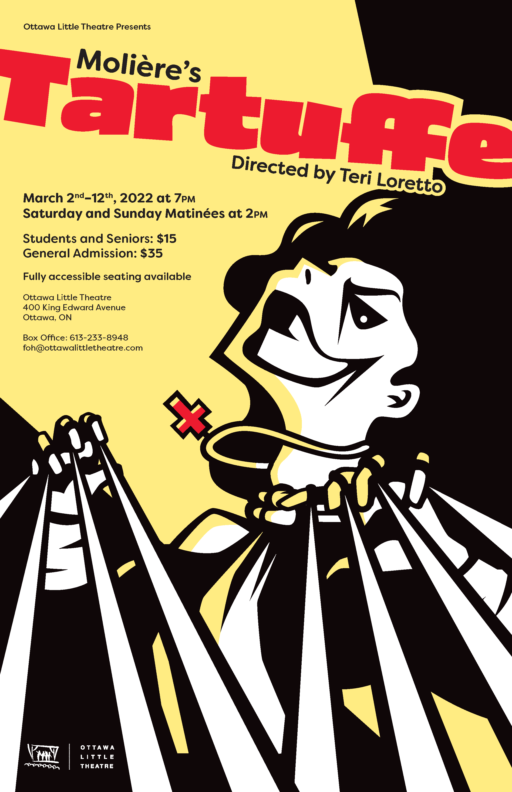
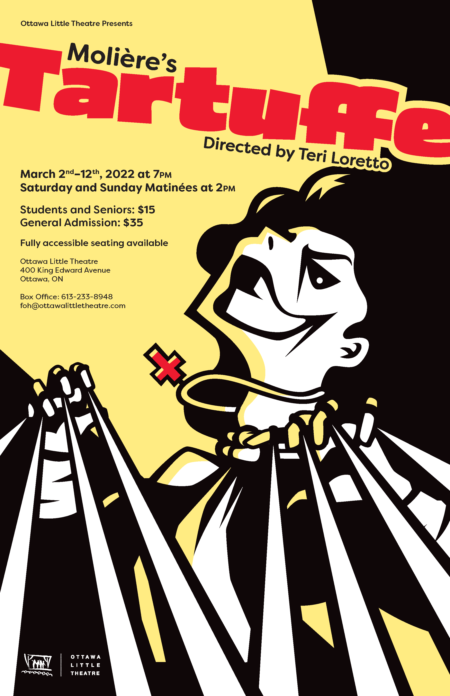
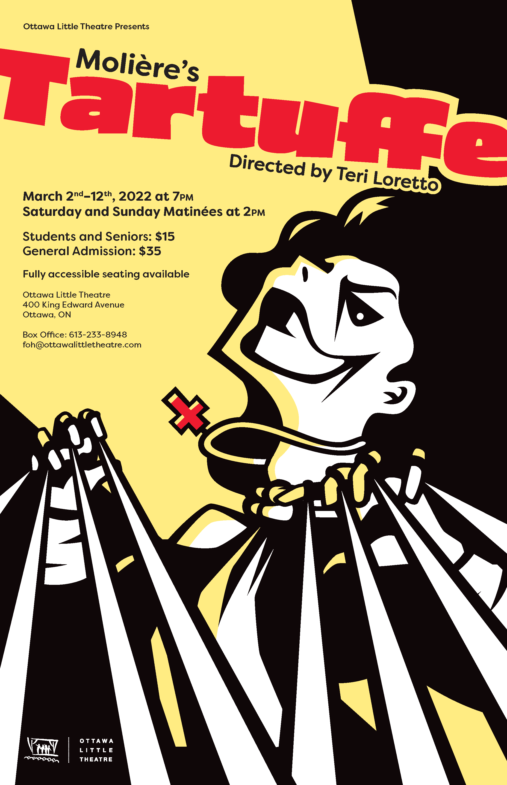

About Me.
I was first introduced to graphic design through a high-school photography class. As someone who enjoys dabbling in different artistic mediums, the idea of being able to use those varied skills appeals to me. As a graphic design student I can now see the world in a different light, understanding how different disciplines come together to create a final product.
The realization that hobbies like painting and photography all have a place in graphic design is what truly drives my passion for the work I do.
The photography and illustrations in the moodboard are all my work.
My Work.


 

